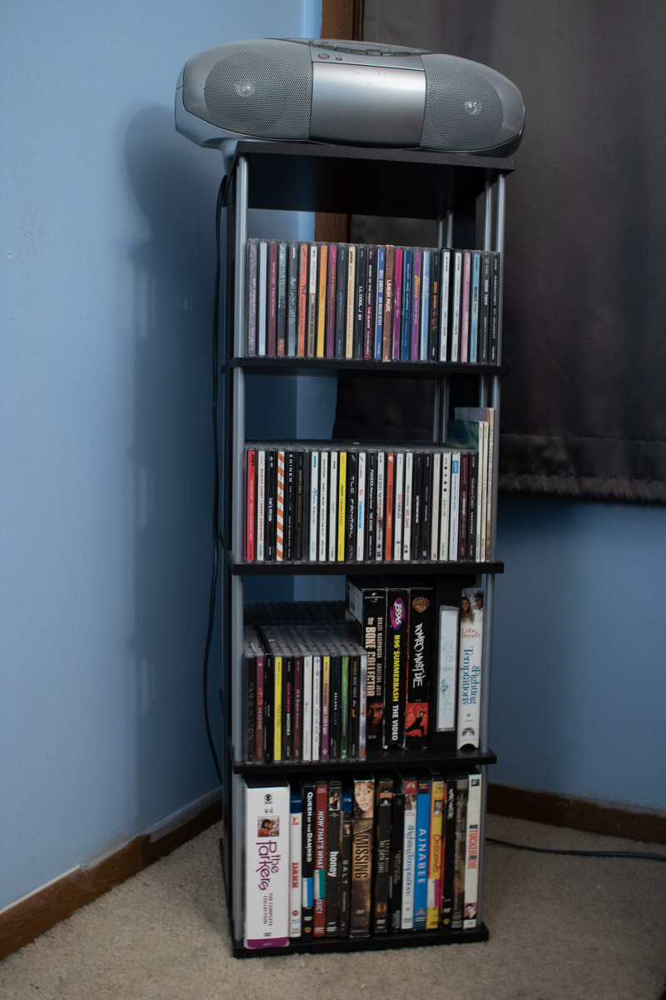
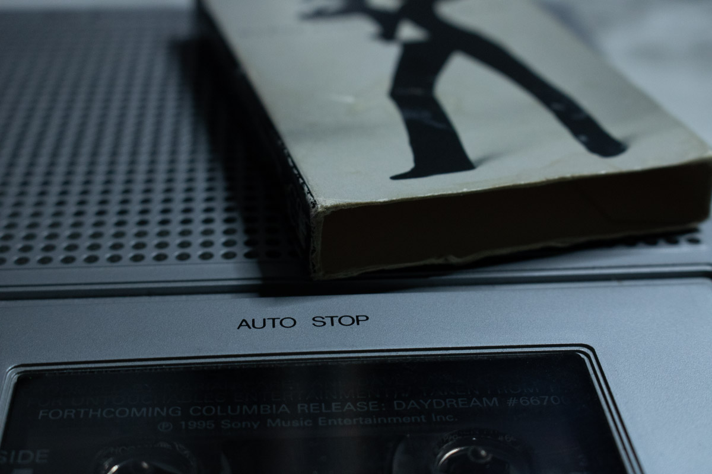

Dive into Music Wonderland: Your Passport to the World of Awesome Tunes!
Are you ready to embark on a thrilling adventure through the incredible universe of music? Buckle up because we're about to explore different music flavors, funky ways to groove to the beats, and the different formats! "Rockin' Music Styles” Just like flavors of ice cream, music comes in all sorts of scrumptious styles. Check out these tasty treats:
- Pop Hits: Think of those catchy tunes on the radio that make you want to dance and sing in the shower!
- Rock 'n' Roll: Music with electric guitars and drum solos that can shake the ground beneath your feet.
- Hip-Hop Groove: Beats that make you want to bust a move, with rhymes that tell stories you can't stop listening to.
- Country Vibes: Songs that feel like sitting around a campfire, sharing tales of adventures and heartbreak.
- Classical Elegance: Music that's like a time machine, taking you on journeys through history with beautiful melodies.
- Jazz Magic: Smooth and sassy tunes that make you feel like you're sippin' lemonade on a sunny porch.
- Speakers Blast: Pump up the volume with big speakers at home, in the car, or at a house party. It's like having your own mini music festival!
- Headphone Groove: Pop on some headphones, and you're in your very own world of music. It's like having a secret portal to the sound universe. Shhh... the music is your secret.
- Concert Mania: Grab tickets and dive into the electric atmosphere of live concerts. It's like being in a sea of music lovers, all dancing to the same rhythm.
- Online Jams: Surf the web to find music on websites like Spotify and Apple Music. You can discover new tunes and artists without leaving your comfy chair.
- CDs (Compact Discs): Think of these shiny discs as futuristic music capsules. Back in the 90s and 2000s, CDs were super popular. They were like the coolest thing around, and almost everyone had a bunch. These little silver wonders brought music to our lives with really clear sound. Plus, you could easily pick your favorite songs with a simple click. Nowadays, you can find these musical treasures at garage sales. People often sell their CD collections, giving you a chance to experience the music that was all the rage during those years in a different way. 
- Vinyl Records: Imagine huge, black pancakes with secret grooves that make music sound warm and alive. Playing a vinyl record is like opening a time capsule and grooving with the legends.
- Cassettes: Picture small tapes you can play in a cassette player. They're portable and have a bit of old-school charm. Collecting cassettes is like going on a musical treasure hunt! 